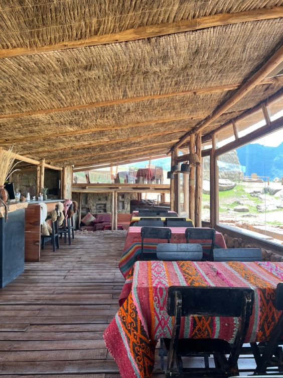
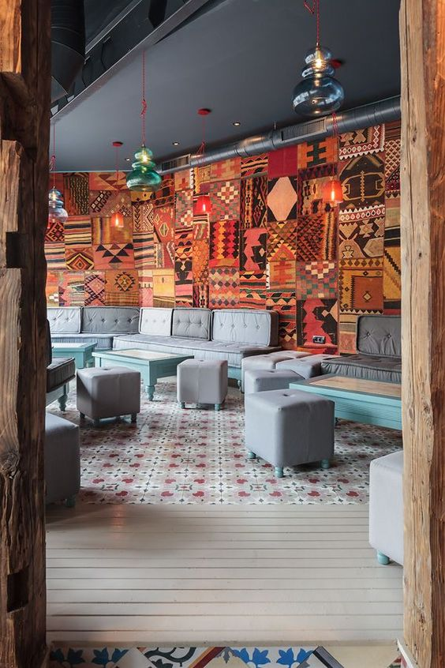

<div class="container-fluid">
  <div class="row">
    <div class="col-md-6 order-md-1">
      <div id="carouselExample3" class="carousel slide" data-ride="carousel" data-interval="2000">
        <div class="carousel-inner">
          <div class="carousel-item active text-center">
            
          </div>
          <div class="carousel-item text-center">
            
          </div>
          <div class="carousel-item text-center">
            
          </div>
        </div>
      </div>

      <div class="text-center mt-4">
        <h1>Perú: Un Viaje Culinario Excepcional</h1>
        <p class="mt-3">
          Perú, tierra de sabores vibrantes y tradiciones culinarias únicas, 
          te invita a un viaje gastronómico donde cada platillo es una celebración de la diversidad y la pasión por la comida.
           Desde las coloridas calles de Lima hasta los encantadores mercados de Cusco, la cocina peruana es un festín de experiencias auténticas.
        </p>
        <div class="mt-3">
          <a routerLink="/reserva" class="btn btn-outline-secondary">Reservar</a>
        </div>
      </div>
    </div>

    <div class="col-md-6 order-md-2">
      <div class="col-md-6">
        <router-outlet></router-outlet>
      </div>
    </div>
  </div>
</div>
